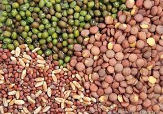

Agricultural Information & Services
SERVICES

Seeds
A seed is an embryonic plant enclosed in a protective outer covering. The formation of the seed is part of the process of reproduction in seed plants, the spermatophytes, including the gymnosperm and angiosperm plants.
Back to Home